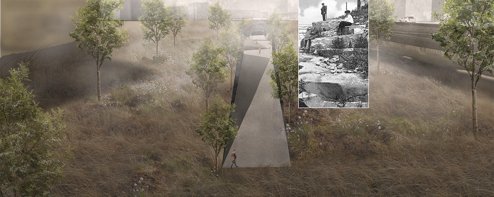
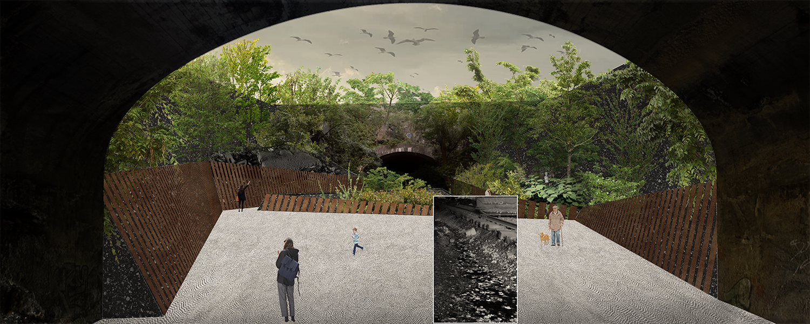
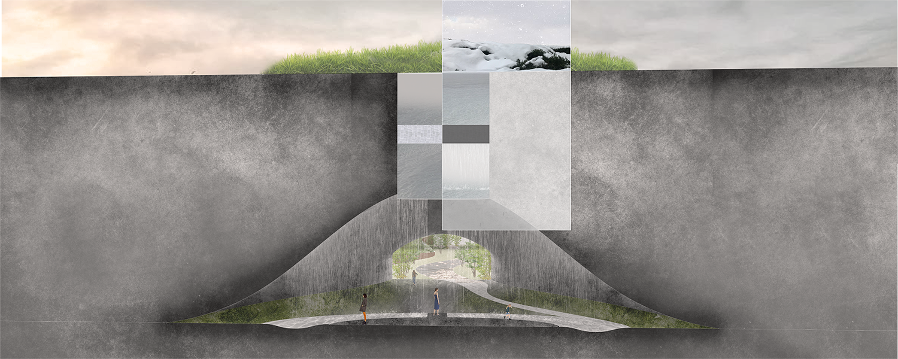
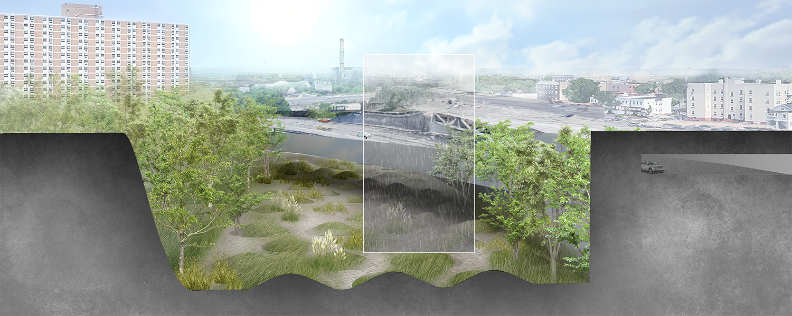
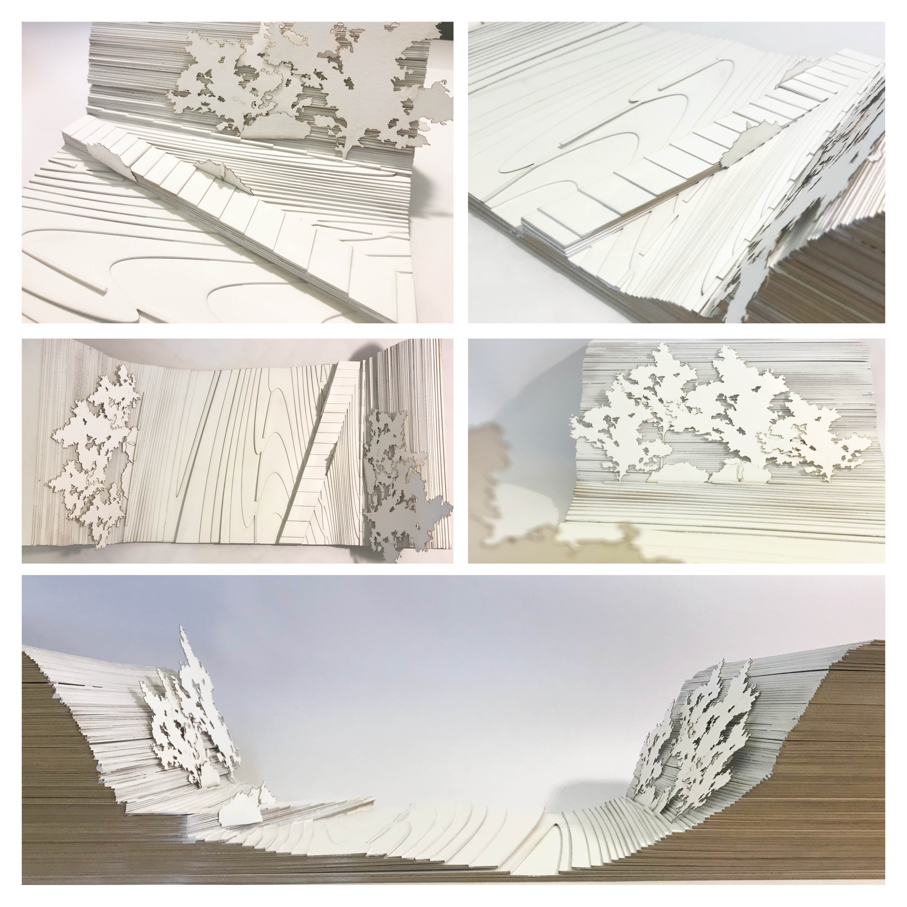

JERSEY CITY
Fall 2019
Urban design studio
Having lost their transportation function and been taken over by spontaneous vegetation, abandonded railway sites like Bergen Arches and Embankment in Jersey City present promising opportunities for public with a wild escape from the busy city. However, solely considering these historic industrial sites as naturally grown habitats neglects their violent past, and represents our continuous problematic conception of nature. Inspired by the healing process in the wounded landscape, this project explores a possible future for Bergen Arches that build an alternative relationship between human lives and “nature.”

- Site plan -
    